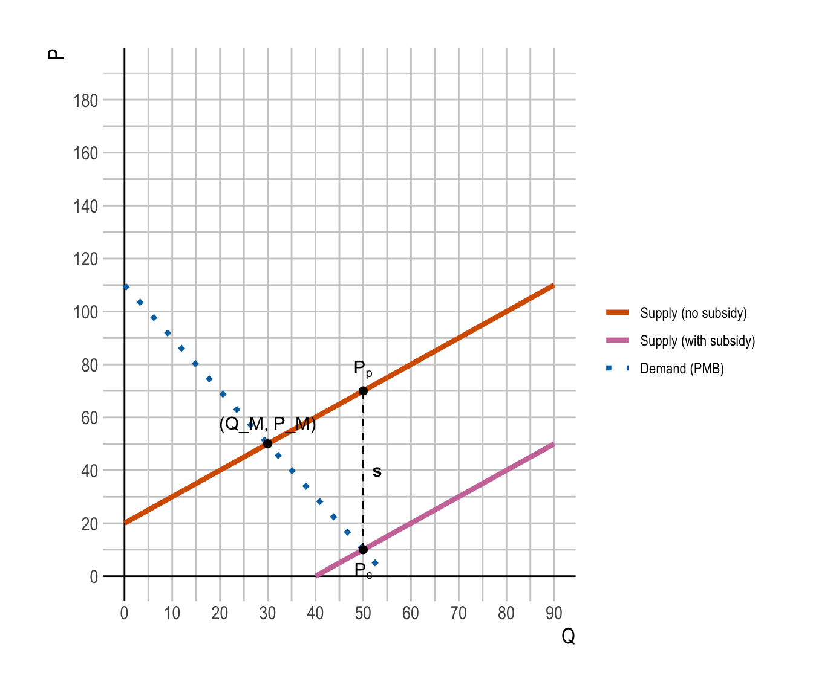

Classwork 13
Self-test for Midterm Exam II
Section 1. Multiple Choice
Question 1
What is the core mechanism behind bounded willpower?
- Social comparison
- Loss aversion
- Present bias causing time-inconsistent preferences
- Failure to understand operating-cost differences
Show answer
Correct answer: c
Explanation:
Bounded willpower refers to the idea that people often intend to act in a certain way in the future (e.g., save more, diet, study) but fail to follow through when the time comes. This is driven by present bias, where individuals place disproportionately high weight on immediate costs and benefits relative to future ones, leading to time-inconsistent preferences.
- Social comparison relates more to preferences over relative status.
- Social comparison relates more to preferences over relative status.
- Loss aversion refers to losses hurting more than equivalent gains feel good.
- Loss aversion refers to losses hurting more than equivalent gains feel good.
- Misunderstanding operating costs is about bounded rationality, not willpower.
Question 2
A $250 benefit arrives 20 years in the future. All else equal, which change will increase its present value?
- Increasing the discount rate from 3% to 5%
- Shortening the time horizon from 20 years to 10 years
- Moving from real to nominal dollars
- Converting the benefit into a cost
Show answer
Correct answer: b
Explanation:
Present value is given by
\[
PV = \frac{FV}{(1 + r)^t}
\]
So PV increases when either the discount rate \(r\) falls, the time horizon \(t\) becomes shorter, or the future value increases.
- Shortening the time from 20 to 10 years reduces the amount of discounting and therefore raises the present value.
- Shortening the time from 20 to 10 years reduces the amount of discounting and therefore raises the present value.
- Increasing the discount rate makes the denominator larger → PV falls, not rises.
- Increasing the discount rate makes the denominator larger → PV falls, not rises.
- Switching between real and nominal dollars just changes the units and the matching discount rate; “all else equal” this does not systematically raise PV.
- Switching between real and nominal dollars just changes the units and the matching discount rate; “all else equal” this does not systematically raise PV.
- Turning a benefit into a cost makes the present value negative, which clearly doesn’t increase PV.
Question 3
Which statement is most accurate?
- A policy with positive \(PV_{NB}\) must be both efficient and equitable
- A policy with negative \(PV_{NB}\) can still be equitable
- Efficiency always implies equity
- Equity is automatically satisfied when the B/C ratio exceeds 1
Show answer
Correct answer: b
Explanation:
- A negative net present value of net benefits (\(PV_{NB} < 0\)) means the policy is inefficient in the sense that total (discounted) costs exceed total (discounted) benefits. However, it might still redistribute resources toward disadvantaged groups, so it can be equitable but inefficient → (b) is correct.
The others incorrectly conflate efficiency and equity:
- Positive \(PV_{NB}\) says the policy is Kaldor–Hicks efficient (benefits exceed costs in total), but it might still be distributionally unfair.
- Positive \(PV_{NB}\) says the policy is Kaldor–Hicks efficient (benefits exceed costs in total), but it might still be distributionally unfair.
- Efficiency and equity are fundamentally different criteria; an efficient policy can be inequitable.
- Efficiency and equity are fundamentally different criteria; an efficient policy can be inequitable.
- A benefit–cost ratio above 1 is just another way of saying benefits exceed costs, not a guarantee of fairness.
Question 4
In a cost-effective pollution reduction policy with multiple firms:
- All firms must abate the same quantity.
- Each firm must face the same average abatement cost.
- Total abatement is zero.
- The marginal abatement costs are equalized across firms.
Show answer
Correct answer: d
Explanation:
A policy is cost-effective when it achieves a given total abatement target at the lowest possible total cost. The key condition for this is:
Marginal abatement costs (MACs) are equalized across firms.
If one firm has a lower MAC than another, we can lower total cost by having the low-cost firm abate more and the high-cost firm abate less until their MACs are equal.
- Equal quantities of abatement across firms are not required; firms can abate different amounts depending on their cost structures.
- Equal quantities of abatement across firms are not required; firms can abate different amounts depending on their cost structures.
- Equal average costs are also not necessary—what matters is equality of marginal costs.
- Equal average costs are also not necessary—what matters is equality of marginal costs.
- Zero total abatement is just “no policy,” not cost-effectiveness.
Question 5
Which of the following most directly describes carbon leakage?
- Emissions reductions that occur due to innovation spillovers.
- Emissions being shifted abroad when production relocates to countries with weaker climate policy.
- Emissions reductions concentrated in non-traded sectors.
- The leakage of methane from oil and gas wells.
Show answer
Correct answer: b
Explanation:
Carbon leakage occurs when stringent climate policy in one country or region raises production costs, causing firms to relocate emissions-intensive production to countries with weaker regulations. The result is that domestic emissions fall, but global emissions fall less or may even rise because production (and pollution) shifts abroad.
- Innovation spillovers are a positive external effect, not leakage.
- Innovation spillovers are a positive external effect, not leakage.
- Emissions reductions in non-traded sectors say where reductions happen, not that emissions are shifting overseas.
- Emissions reductions in non-traded sectors say where reductions happen, not that emissions are shifting overseas.
- Methane leakage from wells is an important issue, but it’s not what “carbon leakage” refers to in the policy context.
Section 2. Filling-in-the-Blanks
Question 6
Effective policy design requires integrating four components: Incentives, ________, Institutions, and ________.
Show answer
Correct answer: Information; Social Norms
Explanation:
A helpful way to think about policy design is that it must align:
- Incentives – prices, regulations, and other material rewards or penalties
- Information – what people know about costs, benefits, risks, and alternatives
- Institutions – formal rules, laws, and organizations that structure behavior
- Social norms – informal rules about what is considered acceptable, fair, or desirable
Even if incentives and information are well designed, policies can fail if institutions are weak or if social norms push people in the opposite direction (e.g., norms that glorify high consumption or stigmatize “green” behavior).
Question 7
The IPCC combines Climate Models (physical simulations) with Socioeconomic Scenarios to form ________________________, which represent different “what if” futures ranging from sustainability to fossil-fueled development.
Show answer
Correct answer: Shared Socioeconomic Pathways (SSPs)
Explanation:
The IPCC uses Shared Socioeconomic Pathways (SSPs) as standardized scenario storylines. They describe different possible futures for population, technology, policy, and economic development, ranging from:
- SSP1: Sustainability
- SSP2: Middle of the Road
- SSP3: Regional Rivalry
- SSP4: Inequality
- SSP5: Fossil-fueled Development
These SSPs, when combined with climate models and emissions trajectories, generate a set of “what if” scenarios used for climate impact and policy analysis.
Question 8
The Paris Agreement includes a mechanism called the ________________________, occurring every 5 years, which evaluates collective progress to inform the next round of Nationally Determined Contributions (NDCs).
Show answer
Correct answer: Global Stocktake
Explanation:
The Global Stocktake is a periodic (every 5 years) assessment under the Paris Agreement that:
- Evaluates collective progress toward long-term goals (e.g., keeping warming well below 2°C)
- Uses this information to inform and strengthen the next round of NDCs
It is essentially a feedback and ratcheting mechanism—countries see how the world is doing, then are expected to increase their ambition over time.
Section 4. Analytical Modeling & Critique
Question 9
Consider a perfectly competitive market for solar energy that generates positive externalities such as reduced carbon emissions and knowledge spillovers.
The private marginal benefit (PMB) and marginal cost (MC) of solar production are:
\[ \begin{aligned} PMB(Q) &= 110 - 2Q\\ MC(Q) &= 20 + Q \end{aligned} \]
and the external marginal benefit (EMB) is:
\[ EMB(Q) = 60 \]
Part A
Find the market equilibrium quantity \(Q_M\) and price \(P_M\).
Show all steps.
Show answer
In an unregulated competitive market, firms and consumers ignore the external benefit and equate private marginal benefit and marginal cost:
\[ PMB(Q) = MC(Q) \]
So:
\[ 110 - 2Q = 20 + Q \]
Rearrange:
\[ \begin{aligned} 110 - 20 &= 3Q \\ 90 &= 3Q \\ Q_M &= 30 \end{aligned} \]
Find the corresponding equilibrium price:
Using \(MC(Q)\):
\(P_M = MC(30) = 20 + 30 = 50\)Check with \(PMB(Q)\):
\(PMB(30) = 110 - 2(30) = 110 - 60 = 50\)
So the market equilibrium is:
- \(Q_M = 30\)
- \(P_M = 50\)
Part B
Compute the social marginal benefit (SMB) function.
Show answer
Social marginal benefit adds the external marginal benefit to the private marginal benefit:
\[ SMB(Q) = PMB(Q) + EMB(Q) \]
Given:
- \(PMB(Q) = 110 - 2Q\)
- \(EMB(Q) = 60\)
Then:
\[ \begin{aligned} SMB(Q) &= (110 - 2Q) + 60 \\ &= 170 - 2Q \end{aligned} \]
So the social marginal benefit function is:
\[ SMB(Q) = 170 - 2Q \]
Part C
Find the socially optimal output \(Q^*\) and price \(P^*\).
Show answer
The social planner chooses \(Q^*\) where:
\[ SMB(Q) = MC(Q) \]
Substitute the functions:
\[ 170 - 2Q = 20 + Q \]
Rearrange:
\[ \begin{aligned} 170 - 20 &= 3Q \\ 150 &= 3Q \\ Q^* &= 50 \end{aligned} \]
At \(Q^*\), the efficient price (the value of one more unit in terms of cost and social benefit) is:
\[ \begin{aligned} P^* &= MC(Q^*) \\ &= 20 + 50 \\ &= 70 \end{aligned} \]
And you can check:
\[ \begin{aligned} SMB(50) &= 170 - 2(50) \\ &= 170 - 100 \\ &= 70 \end{aligned} \]
So at the optimum:
- \(Q^* = 50\)
- \(P^* = 70\)
- And \(SMB(Q^*) = MC(Q^*) = 70\)
Part D
- Graph the \(PMB\), \(SMB\), and \(MC\) curves.
- Label both the market equilibrium (\(Q_M, P_M\)) and the socially optimal equilibrium (\(Q^*, P^*\)).
- Graphically shade and label the deadweight loss (DWL) caused by the positive externality on the graph.
Show answer

Key economic features of the graph:
- The \(PMB\) curve is downward sloping: \(PMB(Q) = 110 - 2Q\).
- The \(SMB\) curve lies above the \(PMB\) curve by a vertical distance of \(EMB = 60\):
\(SMB(Q) = 170 - 2Q\). - The \(MC\) curve is upward sloping: \(MC(Q) = 20 + Q\).
Equilibria:
- Market equilibrium (ignoring external benefit):
\(Q_M = 30\), \(P_M = 50\) (intersection of \(PMB\) and \(MC\)). - Social optimum:
\(Q^* = 50\), \(P^* = 70\) (intersection of \(SMB\) and \(MC\)).
Positive Externalities:
- The positive externality at \((Q_M, P_M)\) corresponds to the area between the \(PMB\) and \(SMB\) curves from \(0\) to \(Q_M\)—a rectangle in this case because the vertical gap \(EMB = 60\) is constant.
Deadweight loss (DWL):
- Because the market under-provides solar (\(Q_M < Q^*\)), the DWL is the triangle between \(SMB\) and \(MC\) from \(Q_M\) to \(Q^*\).
- The shaded triangle in the plot shows the lost net benefits from failing to expand production from \(Q_M\) to \(Q^*\).
Part E
Calculate the optimal per-unit subsidy that would achieve the socially efficient outcome.
Show answer
The idea of a Pigouvian subsidy for a positive externality is to raise the private marginal benefit up to the social marginal benefit.
We want:
\[ PMB(Q) + s = SMB(Q) \]
Since \(SMB(Q) = PMB(Q) + EMB(Q)\), the required subsidy is simply:
\[ s^* = EMB(Q^*) = 60 \]
So the optimal per-unit subsidy is:
- \(s^* = 60\) per unit of solar energy.
Part F
Compute the market price with the subsidy, i.e., the prices received by producers and paid by consumers.
Show answer
Let:
- \(P_c\) = price paid by consumers
- \(P_p\) = price received by producers
- \(s\) = per-unit subsidy to producers
With a subsidy:
\[ P_p = P_c + s \]
At the efficient quantity \(Q^* = 50\):
- Producers must receive \(P_p = MC(Q^*) = 20 + 50 = 70\).
- The optimal subsidy is \(s^* = 60\).
So:
\[ \begin{aligned} P_c &= P_p - s^* \\ &= 70 - 60\\ &= 10 \end{aligned} \]
Check consistency with \(PMB\):
\[ \begin{aligned} PMB(50) &= 110 - 2(50) \\ &= 110 - 100 \\ &= 10 \\ &= P_c \end{aligned} \]
So with the subsidy:
- Consumers pay: \(P_c = 10\)
- Producers receive: \(P_p = 70\)

Part G
Compute the subsidy expenditure and the change in total welfare from implementing the policy.
- Subsidy expenditure represents the total fiscal cost to the government of providing the per-unit subsidy.
Show answer
- Subsidy expenditure
The government pays the subsidy \(s^*\) on each unit produced at the efficient quantity \(Q^*\):
\[ \text{Subsidy Expenditure} = s^* \times Q^* = 60 \times 50 = 3000 \]
So the total fiscal cost is:
- Subsidy expenditure = \(3{,}000\)
- Change in total welfare
Total welfare (including external benefits) is maximized at \(Q^* = 50\).
In an unregulated market setting, the market stops at \(Q_M = 30\), so there is a deadweight loss.
The DWL is the triangle between \(SMB\) and \(MC\) from \(Q_M\) to \(Q^*\).
Base (quantity difference):
\(Q^* - Q_M = 50 - 30 = 20\)Height (difference between \(SMB\) and \(MC\) at \(Q_M\)):
\(SMB(30) = 170 - 2(30) = 170 - 60 = 110\)
\(MC(30) = 20 + 30 = 50\)
Difference: \(110 - 50 = 60\)
So:
\[ DWL = \frac{1}{2} \times 20 \times 60 = 600 \]
This is the net gain in total welfare from moving from \(Q_M\) to \(Q^*\).
- Change in total welfare = \(+600\)
Summary:
- Subsidy expenditure (government’s fiscal cost): \(3{,}000\)
- Subsidy expenditure is transferred to the producers in a lump-sum fashion.
- Net gain in total welfare (recovered DWL): \(600\)